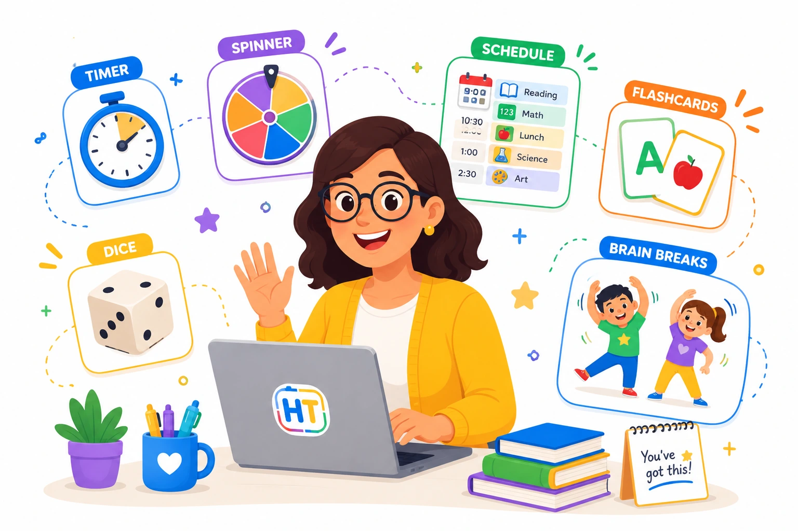

Simple tools for smarter classrooms
An educational dashboard with timers, spinners, dice, visual schedules, and quick tools designed to save teachers time in class.

12 classroom tools for teachers
Built for Pre-K, Kindergarten, and elementary classrooms before middle school.
Classroom Timer
Set a visual countdown for transitions, centers, reading time, and classroom activities.
Open tool →Stopwatch
Track time during games, challenges, classroom routines, and physical activities.
Open tool →Name Spinner
Paste student names and randomly choose who participates next.
Open tool →Team Generator
Create random student teams quickly for games, centers, and collaborative work.
Open tool →Dice Roller
Roll virtual dice for math practice, games, centers, and quick classroom activities.
Open tool →Random Number
Generate random numbers for participation, math games, and classroom decisions.
Open tool →Yes / No Picker
Make quick random yes or no choices for classroom games and prompts.
Open tool →Reward Wheel
Spin a classroom reward wheel with fun incentives and positive choices.
Open tool →Noise Meter
Use a visual sound meter to help students monitor classroom noise levels.
Open tool →Visual Schedule
Build a simple visual schedule and mark classroom activities as complete.
Open tool →Flashcards
Practice sight words, letters, numbers, vocabulary, and quick review concepts.
Open tool →Brain Breaks
Generate quick movement breaks to help students reset and refocus.
Open tool →